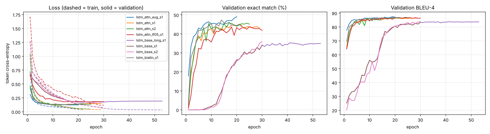

From English to regular expressions: an encoder-decoder with attention, built from scratch
NLP course project, text generation with encoder-decoder
architectures. All numbers below come from the code and logs in this
repository (results/).
1. Introduction
Task. Natural language to regular expression. The input is a short English description of a set of text lines, the output is a regular expression that matches exactly those lines.
lines containing the string 'dog' at least 2 times -> .*(dog){2,}.*Motivation. Regexes are compact, precise and hard to write; people routinely describe what they want in words and then struggle with the syntax. The task is also a good fit for the course: the output language is small and fully formal, so we can check generated outputs in a way that goes beyond string comparison (section 6), and the model's failures are easy to interpret.
Formulation. Given a source token sequence x = (x_1 ... x_n), generate a target token sequence y = (y_1 ... y_m) by maximising p(y | x) = prod_t p(y_t | y_<t, x). The target tokens are regex symbols.
2. Related concepts
- Encoder-decoder (Sutskever et al., 2014). An encoder RNN reads the input and compresses it into a state; a decoder RNN starts from that state and emits the output one token at a time, each step conditioned on the previous token.
- Attention (Bahdanau et al., 2015). A single fixed-size vector must carry the whole sentence, which becomes a bottleneck for long or detail-heavy inputs. Attention lets the decoder look back at all encoder states at every step and weight them.
- This task in the literature. Locascio et al. (2016) introduced the NL-RX dataset and a seq2seq-with-attention model, reporting 58.2% test accuracy on NL-RX-Turk under DFA equivalence (65% of the data for training). Their metric is functional equality, because many regexes are equivalent but written differently.
3. Dataset
- Source: NL-RX-Turk from https://github.com/nicholaslocascio/deep-regex (MIT license). Each description was written by a crowd worker paraphrasing a templated description.
- Size: 10,000 pairs; 9,999 after removing one exact duplicate.
- Fields: input = English description; output =
regular expression. Quoted words are placeholders (
'dog','truck','ring','lake') that also appear in the regex. - Split (random, seed 42): train 8,001 / validation 999 / test 999.
- Statistics (train): average 11.5 input tokens (max 29), average 23.7 output tokens (max 52); 7,767 unique regexes. Because most regexes occur once, 94.5% of the test regexes never appear in training, so the test set measures generalisation to unseen regexes.
- Augmentation (final model only): NL-RX-Synth contains a second, templated description for the same regexes. For the training regexes only, these descriptions are added, giving 15,901 training examples. Validation and test sets are unchanged and no validation/test regex enters training (checked in code).
4. Preprocessing
| Step | What we do | Why |
|---|---|---|
| Normalisation | lowercase, remove quotation marks | reduces vocabulary; the quoted placeholder words stay as ordinary
tokens (dog) |
| Source tokenisation | words (hyphenated words kept whole), punctuation as separate tokens | descriptions mix words and punctuation |
| Target tokenisation | every regex character is a token, except \b and the
four placeholders dog, truck,
ring, lake, which are single tokens |
regex syntax is character-level, but the placeholders must be copied as one unit from the input |
| Vocabularies | built on the training split only; <PAD>=0,
<UNK>=1, <SOS>=2,
<EOS>=3 |
no information from validation/test |
| Padding | batches padded with <PAD>; encoder uses packed
sequences, attention masks padded positions, loss ignores
<PAD> |
variable-length batches without wasting computation or learning on padding |
| Truncation | at most 40 source and 60 target tokens | no example is actually truncated (max 29 and 52) |
| Unknown words | mapped to <UNK>; vocabulary has no frequency
cutoff |
only 0.27% (val) and 0.18% (test) of source tokens are unknown |
Vocabulary sizes: source 467 words, target 43 tokens. Embedding dimension 128 (source and target). Numeric representation: token ids, then a learned embedding layer (padding index fixed to zero).
5. Proposed architecture
Implemented in src/models.py with PyTorch layers
(Embedding, LSTM, Linear) and our own attention, bridge and decoding
code.
- Encoder: Embedding(467, 128) -> dropout -> LSTM (1 layer, hidden 256, unidirectional in the main models).
- Initial decoder state: the encoder's final (h, c) passed through a linear layer + tanh (the "bridge").
- Decoder (baseline): Embedding(43, 128) -> LSTM(hidden 256) -> Linear(256 -> 43) -> softmax. The only link to the input is the initial state, i.e. one fixed-size vector.
- Decoder (attention): at each step, additive
attention
score(s, h_i) = v^T tanh(W_s s + W_h h_i), softmax over source positions (padding masked), context vector = weighted sum of encoder states. The context is concatenated to the LSTM input and to the output layer input. - Prediction and stopping: arg-max (greedy) or beam
search over the 43 output tokens; generation stops at
<EOS>or after 60 tokens. - Parameters: baseline 998,443; attention 1,408,683; bidirectional encoder + attention 2,273,707.
6. Training and evaluation protocol
- Loss: token-level cross-entropy, padding ignored. Optimiser: Adam, learning rate 1e-3, halved after 2 epochs without validation-loss improvement, gradient clipping at 1.0.
- Batch size 64, at most 30 epochs (20 for the augmented model), dropout 0.2 (0.3 plus 5% random source-word dropout in the augmented model). Batches are grouped by target length to reduce padding.
- Teacher forcing: ratio 1.0 in all main models (the gold previous token is always fed during training). One experiment uses 0.5.
- Model selection: the epoch with the best validation exact match (early stopping after 8 epochs without improvement). Learning curves show the losses as well.
- Hardware: CPU only. Training time: 13 to 16 min (30-epoch baseline), 25 to 37 min (attention variants).
Metrics. Several metrics, because no single one is adequate:
| Metric | Meaning | Why |
|---|---|---|
| Exact match (EM) | generated string identical to the reference | strict; underestimates quality because equivalent regexes can be written many ways |
| Functional accuracy | generated regex accepts and rejects the same probe strings as the reference (about 600 strings) | closer to what a user cares about; our own matcher supports the
dataset's & and ~ operators, which
Python's re lacks |
| BLEU-4 | n-gram overlap on regex tokens | smooth diagnostic for near misses |
| Perplexity, token accuracy | teacher-forced diagnostics | compare models independent of decoding |
| Valid-regex rate | output parses as a regex | syntax errors |
Caveats of functional accuracy: it is a sampling test (equal on the
probes, not proven equal), and some reference regexes accept nothing at
all (for example the intersection of dog and
truck), so a prediction that also accepts nothing is
counted as equivalent. We therefore also report it on the
"non-degenerate" subset where the reference accepts some but not all
probes. It is not identical to the DFA equality used by Locascio et al.,
so numbers are comparable in magnitude only.
7. Experimental results
Test set (999 examples), greedy decoding. Seeds: two for the 30-epoch baseline and attention, one for the other rows; "±" is the standard deviation over the two seeds (an estimate from only two points).
| Model | Params | Perplexity | Token acc (%) | BLEU-4 | Exact match (%) | Functional (%) | Functional, non-degenerate (%) | Valid (%) |
|---|---|---|---|---|---|---|---|---|
| LSTM baseline (30 epochs) | 998k | 1.203 | 94.9 | 81.7 | 32.2 ± 1.2 | 55.0 ± 0.8 | 49.7 ± 0.5 | 99.9 |
| LSTM baseline (up to 60 epochs, seed 1) | 998k | 1.220 | 95.0 | 82.3 | 34.1 | 56.4 | 50.7 | 99.8 |
| LSTM + attention | 1.41M | 1.151 | 95.7 | 84.8 | 41.2 ± 0.9 | 62.4 ± 0.8 | 58.4 ± 1.0 | 99.8 |
| + bidirectional encoder | 2.27M | 1.157 | 95.5 | 83.9 | 40.8 | 63.6 | 59.1 | 99.5 |
| + teacher forcing 0.5 | 1.41M | 1.208 | 94.7 | 85.1 | 40.8 | 61.1 | 58.3 | 93.3 |
| + Synth augmentation, more dropout (best) | 1.41M | 1.144 | 96.0 | 85.4 | 45.3 | 65.1 | 60.8 | 99.9 |

Decoding strategies (same trained model):
| Model | Greedy EM / functional | Beam 5 EM / functional |
|---|---|---|
| LSTM baseline (seed 1) | 33.3 / 55.8 | 34.3 / 56.5 |
| LSTM + attention (seed 1) | 40.3 / 61.7 | 39.6 / 61.3 |
| Best model (augmented) | 45.3 / 65.1 | 43.9 / 64.1 |
Reading the results.
- Attention helps clearly. On both seeds, attention beats the 30-epoch baseline by about 9 points of exact match and 7 points of functional accuracy, with lower perplexity. The baseline's validation curve is also much slower: it stays near 0% exact match for the first 8 epochs while attention reaches 20% after 2. The baseline was still improving at epoch 30, so we also trained it for up to 60 epochs (best epoch 41, early stop at 53). It gains only a little (34.1% exact match, 56.4% functional), so against this better-trained baseline attention still wins by about 7 points of exact match and 6 of functional accuracy (single baseline seed). The gap is not an artifact of stopping early.
- Beyond attention, the gains are small. A bidirectional encoder gives equal exact match and +1.2 points functional accuracy for 60% more parameters, which is within the noise of a single seed. Teacher forcing 0.5 does not help: slower convergence, higher validation loss and more invalid regexes (93.3% valid vs 99.8%).
- More data and regularisation help most after attention: +4 points exact match and +2.7 points functional accuracy over the plain attention model (single seed; the gap is larger than the seed spread of about 1 point but we have only one augmented run).
- Beam search does not help. Greedy and beam differ by about 1 point in either direction. Beam search does remove invalid regexes (100% valid), but it does not find better regexes, which suggests that the errors come from the model's own ranking of candidates rather than from the greedy search.
- Overfitting. For the attention models, training loss falls to about 0.05 while validation loss flattens near 0.13 to 0.14 after about 10 epochs, a gap of 0.06 to 0.09 between validation and training loss at the best epoch. Validation exact match keeps creeping up for some epochs even as validation loss is flat. The plain baseline overfits more (gap 0.11 after 30 epochs, 0.15 in the 60-epoch run, where validation loss slowly rises while training loss keeps falling). The augmented, more regularised model has a similar gap to the plain attention model (0.07) but a lower validation loss (0.124 vs 0.129 to 0.140) and the best test scores.
Attention visualisations
(results/attention_examples.png) are interpretable: while
generating [AEIOUaeiou] the decoder attends to the word
"vowel"; {7,} attends to "7 or more times"; ~
attends to "not"; dog attends to the word "dog".

8. Generated examples
Full lists in results/qualitative_examples.md (best
model, test set, greedy).
Correct
| Input | Output (= reference) |
|---|---|
| lines with 'dog' before a capital letter followed by a lower-case letter | (dog).*([A-Z].*[a-z].*).* |
| lines not words with lower-case letter, 7 or more times | ~(\b([a-z]){7,}\b) |
| Items with a numeral or an upper case letter at least five times. | (([A-Z])|([0-9])){5,} |
Different string, same behaviour: "Items with 'dog'
preceding a small letter or letter." Reference
(dog).*(([A-Za-z])|([a-z])).*, generated
(dog).*(([a-z])|([A-Za-z])).* (alternatives in a different
order).
Failures
| Input | Reference | Generated | What went wrong |
|---|---|---|---|
| no lines containing the string 'dog' or a capital letter | .*(~(dog))&([A-Z]).* |
.*(dog)|([A-Z]).* |
negation dropped, & replaced by | |
| lines which do not contain the string "dog" or a vowel or a letter | ~((dog)&([AEIOUaeiou])&([A-Za-z])) |
~(((dog)|([AEIOUaeiou]))|([A-Za-z])) |
scope of "not" and the logical operator are confused |
| lines containing a character followed by a number, 6 or more times | (.).*(([0-9]){6,}).* |
(.*..*[0-9].*.*){6,} |
the repetition is applied to the wrong sub-expression |
| lines with words with string 'dog' and vowel or a capital | \b(dog)&(([AEIOUaeiou])|([A-Z]))\b |
\b((dog)&([AEIOUaeiou]))|([A-Z])\b |
right pieces, wrong grouping |
| all lines | ((.*)((dog)|(truck)))* |
((.*)([A-Z]))* |
a very short, unusual description; invents content |
9. Discussion
Does the model learn the task? Yes, partially. Token accuracy is 96% and BLEU is 85, and about 65% of generated regexes behave like the reference on our probes, on regexes never seen in training. Valid regexes are produced 99.9% of the time, so the decoder has learned the syntax.
Where it fails. Accuracy by property of the reference (best model, test set):
| Property | n | Exact match (%) | Functional (%) |
|---|---|---|---|
contains negation ~ |
154 | 42.2 | 55.2 |
contains word boundary \b |
194 | 39.2 | 58.2 |
contains alternation | |
368 | 48.1 | 60.9 |
contains repetition {n,m} |
213 | 52.6 | 67.1 |
contains intersection & |
271 | 45.8 | 71.6 |
The weakest cases involve negation and word boundaries. Of the 999 test examples, 453 are exact matches, 197 are equivalent but written differently, 348 are valid but wrong and 1 is invalid. Failures are therefore overwhelmingly semantic, not syntactic.
Why it fails.
- Scope and precedence. "not X or Y" can mean ~(X|Y) or (~X)|Y. The description rarely settles it, and a fixed-size set of RNN states has to learn grouping that a parser would make explicit.
- Noisy and ambiguous descriptions. The crowd-worker paraphrases contain typos ("Lends that end..."), unusual wording and several regexes are valid readings of the same sentence; the model can only produce one.
- Dataset conventions. Some references behave unintuitively
(for example
~(dog)for "lines that do not contain dog" matches any line that is not exactlydog), so even a correct reading of English can disagree with the reference. - Mostly unseen regexes. 94.5% of test regexes are new combinations, so the model must compose, not recall. For the attention models, the 55 test examples whose regex also occurs in training score 39 to 47% exact match, against 41 to 45% for unseen regexes, so there is no clear memorisation advantage (the seen subset is small; the baseline does score higher on seen regexes, 41% vs 32%).
Strengths. Small models, CPU training, interpretable attention, no pretrained components, robust syntax.
Limitations. Functional accuracy is estimated from probe strings. Only two seeds for the main comparison and one for the variants, so small differences (bidirectional, teacher forcing) should not be over-read. Our numbers are not directly comparable to the paper's DFA-equality figures.
Possible improvements. Exact DFA-based equivalence; syntax-constrained decoding or a tree decoder that enforces balanced parentheses and operator scope; ensembling seeds; a Transformer encoder-decoder; more paraphrase data.
10. Conclusion
A from-scratch LSTM encoder-decoder learns to translate English descriptions into regular expressions, and an additive attention mechanism is the single most useful addition (+7 to +9 points exact match and +6 to +7 functional accuracy over the baseline, depending on its training length). Adding the templated descriptions of the training regexes and stronger regularisation gives the best model (45.3% exact match, 65.1% functional accuracy). Beam search, a bidirectional encoder and partial teacher forcing did not give clear gains. The main remaining errors are about negation and grouping, which suggests structure-aware decoding as the next step. Lesson learned: the choice of metric matters as much as the model, since exact match alone understates quality on a task where many outputs are equivalent.
Reproducibility. README.md lists the
commands; every run's configuration, learning curve, checkpoint and test
predictions are in results/<run>/.
References
- Locascio, Narasimhan, DeLeon, Kushman, Barzilay. Neural Generation of Regular Expressions from Natural Language with Minimal Domain Knowledge. EMNLP 2016. https://arxiv.org/abs/1608.03000
- Sutskever, Vinyals, Le. Sequence to Sequence Learning with Neural Networks. NeurIPS 2014.
- Bahdanau, Cho, Bengio. Neural Machine Translation by Jointly Learning to Align and Translate. ICLR 2015.